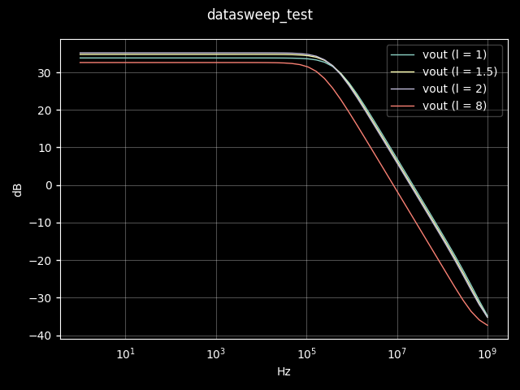
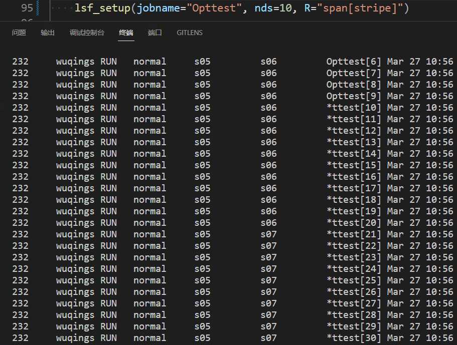
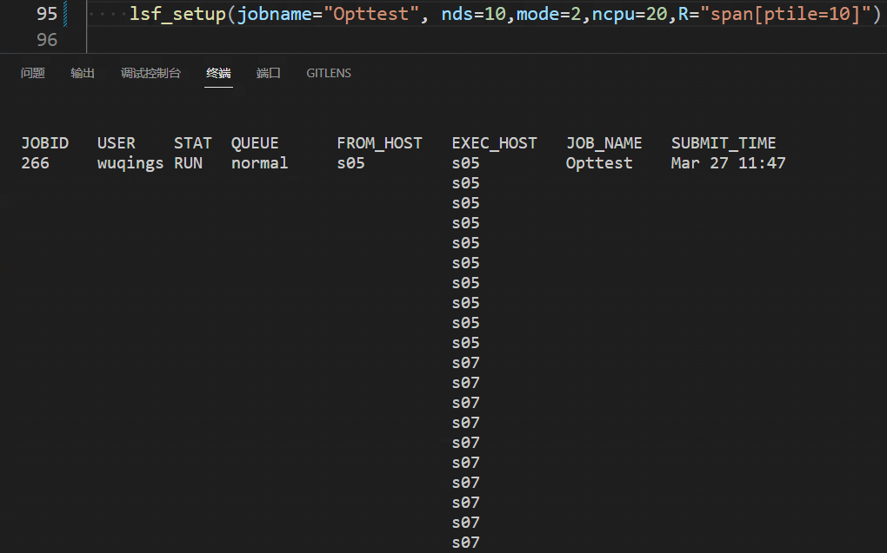
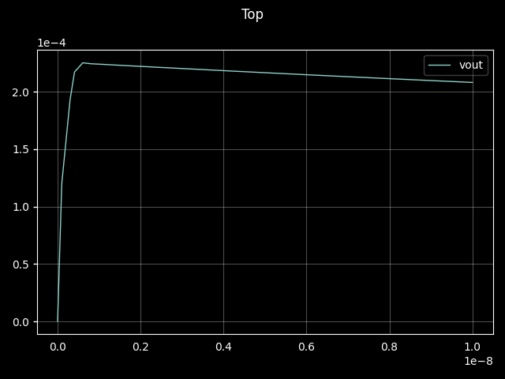
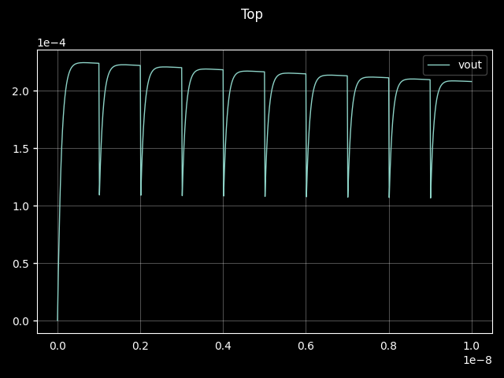
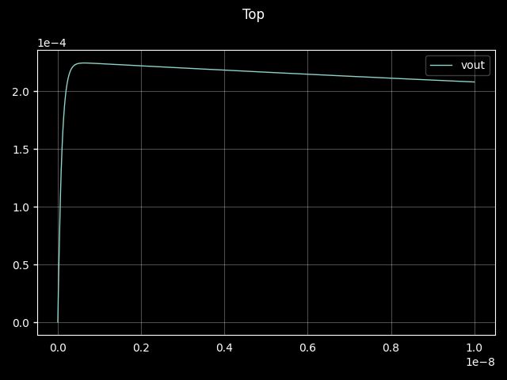

仿真加速
仿真加速
DataSweep进行仿真加速
DataSweep()说明
当电路需要对某个参数进行扫描，以观察参数变化对电路性能影响时，可以使用DataSweep来加速这一过程。DataSweep需配合Variable和get_circuit().datasweep来使用，如下：
l = Variable(name="l", value=1)
w = Variable(name="w", value=5)
get_circuit().datasweep = DataSweep(
name="sweepdata",
params=["l","w"],
values=np.array([[1, 1.5, 2, 8], [5, 6, 7, 6]]),
)DataSweep的参数说明如下：
| 参数 | 说明 | 默认值 |
|---|---|---|
| name | 扫描变量组的名称，需填"sweepdata" | -- |
| params | 扫描变量名,为Variable()参数name的集合 | -- |
| values | 变量对应扫描值 | -- |
Variable和DataSweep在网表中的表现形式如下：
parameters l=1
parameters w=5
......
sweepdata paramset {
l w
1.0000e+00 5.0000e+00
1.5000e+00 6.0000e+00
2.0000e+00 7.0000e+00
8.0000e+00 6.0000e+00
}示例
下面展示了一个使用datasweep扫参的例子，例子中的变量设置是放在电路外部，再通过参数传入到电路内部，直接将变量设置在电路内部也是允许的。
def test1():
@testbench
def datasweep_test():
VINP, VINN, IDC = Node(3)
l = Variable(name="l", value=1)
w = Variable(name="w", value=5)
amp5t2(VINP, VINN, IDC, "vout", l1=l, w1=w)
get_circuit().datasweep = DataSweep(
"sweepdata",
["l", "w"],
np.array([[1, 1.5, 2, 8], [5, 6, 7, 6]]),
)
I(IDC, Vss(), dc=10e-6)
V(Vdd(), Vss(), dc=1.2, name="Vsupply")
# testbench
cgnd = Node(name="cgnd")
V(VINP, 0, dc=0.6).rename("VCM")
L("vout", cgnd, l=1e12).rename("l1")
C(cgnd, 0, c=1e12).rename("c1")
V(VINN, cgnd, ac=1).rename("vfb")
# results
raw = ac(start=1)
watch(
"vout",
mode="semilogx",
calc=lambda x: T.db20(x),
ylabel="dB",
xlabel="Hz",
)
raw.show()扫参结果如下图所示。

DataSweep拆分并行
DataSweepPro()
当DataSweep扫参数量过大(5000组以上)，仿真执行时间就会很长，因此将DataSweep拆分成多组并行，就可以大大提高仿真效率。实现DataSweep拆分的API为DataSweepPro，其使用方式和说明如下：
l = Variable(name="l", value=1)
w = Variable(name="w", value=5)
get_circuit().datasweep = DataSweepPro(
name="sweepdata",
params=["l","w"],
values=np.array([[1, 1.5, 2, 8], [5, 6, 7, 6]]),
nproc=2,
)DataSweepPro的参数说明如下：
| 参数 | 说明 | 默认值 |
|---|---|---|
| name | 扫描变量组的名称，需填"sweepdata" | -- |
| params | 扫描变量名,为Variable()参数name的集合 | -- |
| values | 变量对应扫描值 | -- |
| nproc | datasweep拆分数 | -- |
DataSweepPro与DataSweep相比，在应用层方面仅仅多了一个nproc参数，而使用方式没有任何区别。当nproc=1时，DataSweepPro与DataSweep的功能一致。
get_circuit().parallel
DataSweep拆分后，多个datasweep之间执行并行仿真的关键时使用get_circuit().parallel。get_circuit().parallel的基本使用方法如下：
get_circuit().parallel.start(nproc=3) #开启并行仿真，允许最多三个仿真同时进行
raw=tran() #这里的tran可以替换为任何TED支持的仿真
get_circuit().parallel.stop() #关闭并行仿真get_circuit().parallel.start()的参数说明：
| 参数 | 说明 | 默认值 |
|---|---|---|
| nproc | 允许最大并行仿真数 | -- |
datasweep拆分仿真加速示例
def test2():
from pyted.frontend import Variable
from kernel import DataSweepPro
import random
@testbench
def test_multprocess():
VINP, VINN, IDC = Node(3)
l = Variable(name="l", value=1)
w = Variable(name="w", value=5)
amp5t2(VINP, VINN, IDC, "vout", l1=l, w1=w)
_l = [5, 6, 7]
_w = [8, 9, 10]
get_circuit().datasweep = DataSweepPro(
"sweepdata",
["l", "w"],
np.array([_l, _w]),
2,
)
I(IDC, Vss(), dc=10e-6)
V(Vdd(), Vss(), dc=1.2, name="Vsupply")
# testbench
SR_Vsource = f"type=pulse dc=0 val0=0 delay=0 val1=1.2 width=50u period=100u rise=10n fall=10n"
V(VINP, 0).set_paramstr(SR_Vsource)
get_circuit().parallel.start(3)
raw = tran(stop=100e-6)
get_circuit().parallel.stop()
debug(raw.get_signal("vout"))TestBench并行
实现TestBench并行的方式为使用get_circuit().parallel。在get_circuit().parallel.start()和get_circuit().parallel.stop()之间添加TestBench即可实现TestBench之间的并行。一个简单的示意如下：
get_circuit().parallel.start()
raw1=ac()
raw2=tran()
...
rawn=noise()
get_circuit().parallel.stop()上述例子演示的是对相同的外围电路执行不同仿真的TestBench并行。实际上的TestBench并行更多的是不同外围电路的TestBench并行，这一类TestBench被广泛的运用在TED测试器中。一个测试器的TestBench并行示意如下：
get_circuit().parallel.start()
gainTester = GainTester(module, name, vdd, OTAtype, vcmi, vcmo, self.actester_settings).run()
THDTester = THDTester(module, name, vdd, OTAtype, vcmi, vcmo, self.thdtester_settings
).run()
DCTester = DCTester(module, name, vdd, OTAtype, vcmi, vcmo).run()
psrrTester = PSRRTester(module, name, vdd, OTAtype, vcmi, vcmo).run()
noiseTester = NoiseTester(module, name, vdd, OTAtype, vcmi, vcmo, self.noisetester_settings).run()
cmrrTester = CMRRTester(module, name, vdd, OTAtype, vcmi, vcmo).run()
srTester = SRTester(module, name, vdd, OTAtype, vcmi, vcmo, self.srtester_settings).run()
ICMRTester = ICMRTestr(module, name, vdd, OTAtype, vcmi, vcmo).run()
OPRTester = OutpSwingTester(module, name, vdd, OTAtype, vcmi, vcmo).run()
get_circuit().parallel.stop()用户可以自己编写测试器，然后使用get_circuit().parallel来将编写的TestBench进行并行仿真。有关测试器的编写方法请查阅生成器和测试器
分布式并行
分布式并行是TED中实现大规模电路扫参和电路优化的并行方式，利用集群资源提高仿真效率。
注: 当前分布式仿真仅支持在s05提交作业。
使用方式
- 导入lsf_setup
from pyted import lsf_setup- 设置lsf参数
lsf_setup()的参数如下所示：
| 参数 | 说明 | 类型 | 默认值 |
|---|---|---|---|
| jobname | 提交的作业名，用于设置LSF的-J参数 | str | MyJob |
| ncpu | 作业需要的cpu数目，用于设置LSF的-n参数。该值为None时,LSF会使用默认设置 | int | None |
| hosts | 指定作业执行的节点，用于设置LSF的-m参数。该值为None时，由LSF分配节点 | str | None |
| R | 指定作业的资源需求和限制条件，用于设置LSF的-R参数 | str | None |
| W | 指定作业的运行时间，用于设置LSF的-W参数 | str | None |
| nds | 指定datasweep切分数 | int | None |
| mode | 指定生成的py脚本模式 | int | 1 |
- 在终端中加载lsf环境
. /global_home/share/lsfsce/build/conf/profile.lsf
- 执行你的优化代码
例如：
t65 tedhub/common/opamp/tests/test_generator/test_SingleStageOTA_5T_generator.py::test_opt
关于mode参数的详细说明：
- mode=1
生成带有LSF环境变量LSB_JOBINDEX的作业脚本。使用该模式时，作业会被打包成一个作业组提交，其中每个子作业都会默认使用一个CPU进行作业。其效果如下图所示：

该案例中，使用R="span[stripe]"让作业均匀分布在每个计算节点。
- mode=2
生成使用进程池的作业脚本。使用该模式时，作业为单独的一个作业，此时可使用lsf_setup()中的R参数和ncpu参数来进行作业规划。其效果如下所示：

该案例中，作业申请了一共20个核(ncpu=20)，每个节点10个核(span[ptile=10])。
实际使用中，若无特殊需求，使用mode=1即可。
示例
如下为一个使用分布式仿真优化的例子：
def test_opt():
from tedhub.common.opamp import SingleStage_5T
from frontend.tester import CombinedTester
from tedhub.circuit.testers import OTATester
from taco import NSGA_II, DE
from pyted import lsf_setup
lsf_setup(jobname="Opttest", nds=10,R="span[stripe]")
# lsf_setup(jobname="Opttest", nds=10,mode=2,ncpu=20,R="span[ptile=10]")
with setenv(simulator="spectremdl"):
dut = SingleStage_5T()
dut_tester: OTATester = dut.test()
# dut.to_fig(name="initial")
tester = CombinedTester(
[
dut_tester.gainTester,
dut_tester.noiseTester,
dut_tester.OPRTester,
dut_tester.ICMRTester,
]
)
def problem(tester: OTATester):
from frontend import Problem
gain = tester["gain"]
bw = tester["bw"]
pm = tester["pm"]
gbw = tester["gbw"]
ops = tester["OPSmin_OPE"]
icmr_min = tester["ICMRmin_OPE"]
debug(
"\n"
+ bcolors.render(
", ".join(
[
f"gain = {gain.db():.2f}dB",
f"bw = {bw/1e6:.4f}Mhz",
f"gbw = {gbw/1e6:.4f}Mhz",
f"pm = {pm:.2f}°",
f"ops = {ops:.2f}V",
f"icmr = {icmr_min:.2f}V",
]
),
color="yellow",
)
)
return Problem(
objective=gbw.maximize().rename("GBW"),
constraint=(
gbw.gt(30e6).rename("GBW"),
gain.db().gt(35).rename("Av"),
ops.gt(0.1).rename("ops"),
icmr_min.gt(0.1).rename("icmr"),
),
)
configs = {
"pop_size": 30,
"maxgen": 30,
}
opt = tester.optimize(
problem=problem,
optimizer=DE,
**configs,
)
res = opt.solve()
if res["success"]:
dut.update_variables(res=res)
dut.test(name="Optimization")TDS时域切分并行仿真
时域切分(Time-Domain Segmentation,TDS)是一项旨在加速瞬态仿真的技术，对于一些大规模的电路(如ADC)，瞬态仿真的往往非常耗时，此时采用TDS方法可以做到在不影响仿真结果的前提下大大缩短仿真时间。TDS技术对电路特性有所要求，必须拥有短时记忆特性的电路才能使用TDS技术。目前已验证过适合使用TDS加速瞬态仿真的ADC电路有FLASH ADC、SAR ADC和Σ-Δ ADC。更多关于TDS技术，请查阅"Time-Domain Segmentation based Massively Parallel Simulation for ADCs"
tds说明
tds仿真的参数设置如下所示：
def tds(stop,step,toverlap,nproc):
"""
raw = tds(stop=1000e-6,step=10e-6,nproc=10)
"""| 参数 | 说明 | 默认值 |
|---|---|---|
| stop | 仿真结束时间 | 1e-8 |
| step | 仿真步长 | 1e-10 |
| nproc | 切分数,即将瞬态仿真分成nproc份 | 10 |
| toverlap | 切分后，每段仿真的重叠时间 | stop/nproc/20 |
示例
def test_tds():
@testbench
def Top():
vout, input = Node(2)
R(Vdd(), vout, r=10e3)
vout >> NMOS(l=1e-6, w=5e-6, m=1) % input >> Vss()
(input, Vss()) >> V(dc=1, mode="sine", amp=1, freq=1e6)
watch("vout")
raw = tds()
raw.show()未使用tds：

使用tds且toverlap使用默认值：

使用tds且toverlap=1e-9时：

练习
搭建电路，尝试上述任意一种并行仿真。